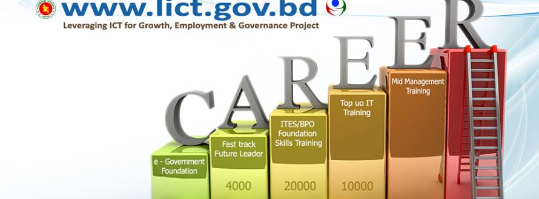

- Before Registration Please read the FTFL Homepage thoroughly!!!
- This site is best viewed with Mozilla Firefox/Google Chrome web browser
"Everyone has potential regradless of background"

Looking for a career path in IT/ITES Industry of Bangladesh?
Want to be a Future Leader of IT World?
The initiative of LICT is part of the government's plan to create 30,000 direct and 120,000 indirect jobs in the IT and ITES companies under LICT Project in which the World Bank is providing US$ 70 million credit for implementing the Leveraging ICT for growth, Employment and Governance project (LICT) of Bangladesh Computer Council (BCC) under the ICT Division of Posts, Telecommunication and IT Ministry.
The LICT has good package of incentives for the trainees and the IT and ITES companies against the training and recruitment to be made by them of the FTFL trainees.
The LICT in collaboration with IT and ITES industries will select the trainees for FTFL as per skills demand, especially in the areas of software development, business process outsourcing (BPO) and IT/ITES related management
The LICT will train them according to companies need and after completion of six-months training the trainees will be absorbed by the companies as FTFL.
FTFL would be brought under international certification by holding examination and their activities will be monitored online by the LICT project for a certain period of time.
Initially the program will be launched for building 840 educated youths as FTFL and befitting to the skills demand of IT and ITES companies by December this year. Out of 840 initial FTFL
-
240 will be selected for software development (IT)
-
200 for BPO (ITES)
-
200 for IT/ITES related management
- 200 for ITSS (IT Sales & Support)
Leading IT experts of IT and ITES companies will conduct the training.
LICT project authorities have already asked the Bangladesh Association of Software Information and Services (BASIS), a platform of the country's IT and ITES companies, to send the list of manpower required for IT and ITES companies.